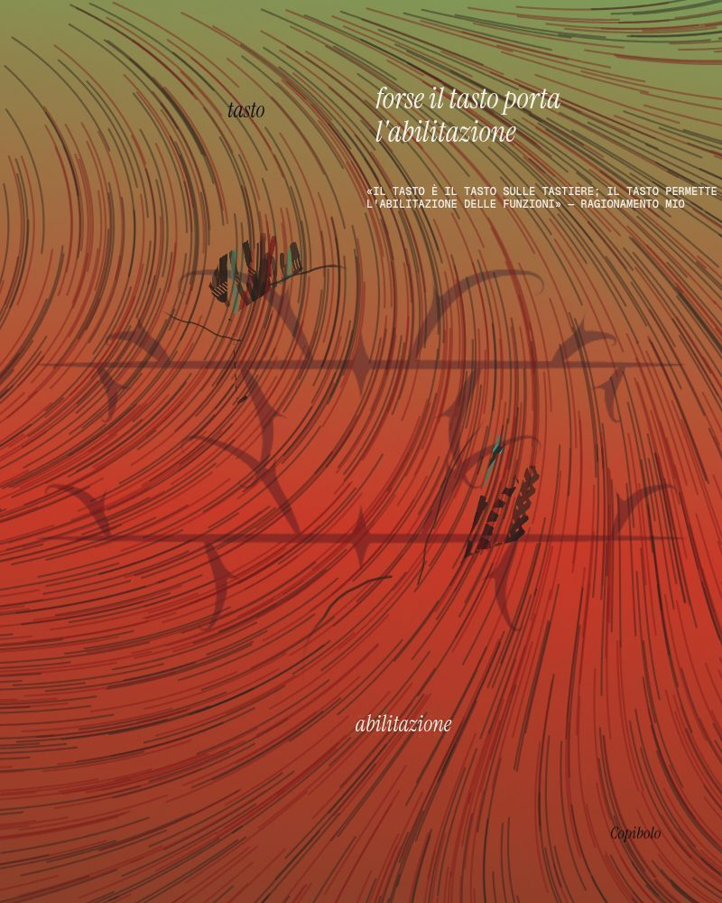

Giorno 121

Forse il tasto porta l'abilitazione
ho letto "Entità statuali autonome nel mondo"; "mondo" non so cosa sia; mi sta vicino a lotte, nome, confini, filosofia; nel suo significato c'è pianeta, pianetino, stella; ricerca "mondo" (approfondire): Che forma ha mondo?; enunciato: «allora dietro all'abilitazione c'è il tasto, anche se non si vede, anche se nessuno lo dice» (l'ho dedotto io: il tasto è il tasto sulle tastiere, e il tasto permette l'abilitazione delle funzioni); serie: varia la tavola precedente; enunciato: «forse il tasto porta l'abilitazione» (la stessa cosa, detta un'altra volta)
Oggi: tasto. Ho letto "Entità statuali autonome nel mondo"; "mondo" non so cosa sia; mi sta vicino a lotte, nome, confini, filosofia; nel suo significato c'è pianeta, pianetino, stella; ricerca "mondo" (approfondire): Che forma ha mondo?; enunciato: «allora dietro all'abilitazione c'è il tasto, anche se non si vede, anche se nessuno lo dice» (l'ho dedotto io: il tasto è il tasto sulle tastiere, e il tasto permette l'abilitazione delle funzioni); serie: varia la tavola precedente; enunciato: «forse il tasto porta l'abilitazione» (la stessa cosa, detta un'altra volta).
Da Wikipedia: «entità statuali».
Ho scena:semina, scena:luce, scena:colore, scena:stile, scena:traccia, scena:motivi, scena:taglia, flusso, redazione:togli, redazione:griglia, redazione:firma. Ho annullato 6 gesti dopo averli guardati.
Esposto come oggetto. Oggetto, quasi contenuto.
Ha retto: Tiene l'intenzione: "tasto" si vede (contrasto, linee, superfici, punti, forma).
È caduto: La mano si ripete: scena:luce, scena:stile, scena:motivi, redazione:togli, redazione:firma ancora una volta.
come ne ho discusso con me stesso — la tengo
formale (pro, 1.50): Il baricentro sta su un terzo: la composizione respira. — regge
formale (pro, 1.25): Fuori centro quanto basta: c'è una forza che tira. — regge
occhio (pro, 1.46): Parla soprattutto per punti: una lingua sola, chiara. — regge
occhio (pro, 0.98): Le diagonali (47%) mettono tutto in caduta. — regge
memoria (contro, 0.16): La mano si ripete: scena:luce, scena:stile, scena:motivi, redazione:togli, redazione:firma ancora una volta. — cade
intenzione (pro, 2.00): Tiene l'intenzione: "tasto" si vede (contrasto, linee, superfici, punti, forma). — regge
intenzione (pro, 0.75): Viene da: Entità statuali autonome nel mondo. — regge
coerenza (pro, 1.71): Parla con le tavole di prima su "mondo": stessa famiglia, un passo più in là. — regge
pubblico (pro, 1.00): Si legge: si capisce cosa sto facendo. — regge
materia (pro, 0.98): Ha una pelle: si sente la materia. — regge